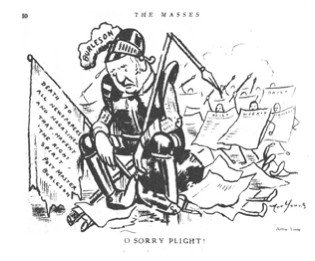

Archived page recovered from an iWeb site (c. 2008–2015). Links and course details may be out of date.
Death_and_the_Censor_2

Even in the last throes of death brought on by the July postal suppression of its August 1917 edition, The Masses, “a Magazine with a sense of Humor and no respect for the Respectable,” “continued its policy of unremitting protest” in its war against war.
The metonymy of magazine for editors and writers of the magazine is a common one. Continued external assault on the magazine almost required that it was spoken of using this device: the magazine suffered a setback, the magazine continued its struggle, the magazine finally could bear the financial burden of first class mail no longer. In this final case, the corporate treatment of the editors and writers who comprise the magazine stems, of course, from its legal status as a corporation.
Discursive Suicidal Tendencies:
The Prosopopoeia of Self-Censoring Censure
In the September 1917 issue of The Masses, Art Young's cartoon satirizing Postmaster General Albert Burleson lashes out at the man responsible for the eventual revocation of second-class mail status for the magazine, which eventually caused financial repercussions so significant as to "kill" the magazine. Bearing a banner reading "Death to all newspapers and magazines that haven't 'the right spirit,'" Burleson is exhausted from sheer effort of having slain so many publications opposing the war. Published after the ban on the August issue of The Masses, the cartoon not only mocks the censor, but also represents the futility of his actions, as the gathering sea of anthropomorphic newspapers rally in protest behind him. The titular “Sorry Plight,” then, is not only that of the newspapers who have been quashed beneath the censor's feet, but also that of the censor himself whose position as Postmaster General requires the exhausting enforcement of the Espionage Act.